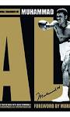

|  | ||||
| muhammad ali the greatest: my own story | muhammad ali in his own words | the treasures of muhammad ali | ||
| muhammad ali the soul of a butterfly | muhammad ali unfiltered: rare, iconic, and officially authorized photos of the greatest | muhammad ali and sri chinmoy |